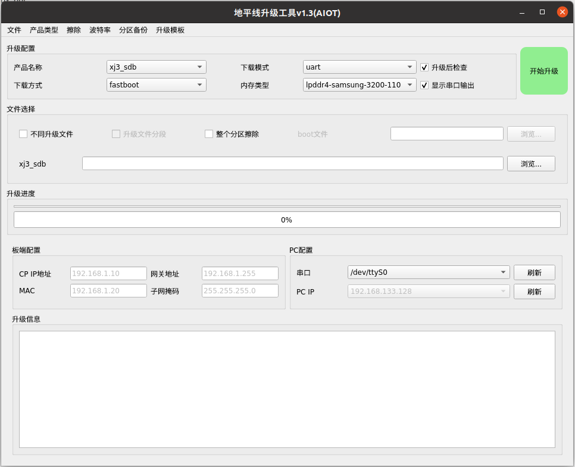
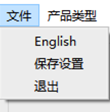
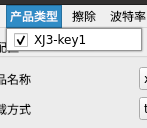
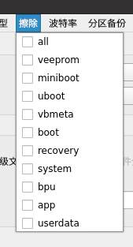
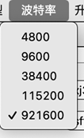
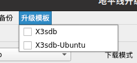
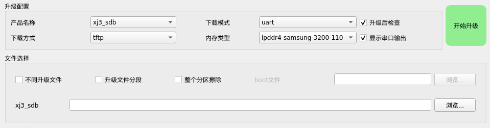
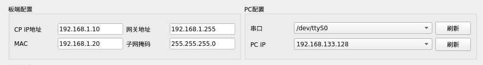
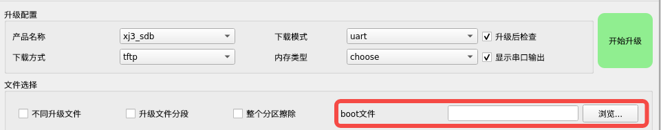

7.1. 地平线产品升级工具使用手册
7.1.1. 升级工具基本介绍
7.1.1.1. 基本操作介绍
升级工具支持windows64位系统和ubuntu14.04及以上版本
用户以压缩包的形式下载到工程文件，需要在对应平台内解压，解压后，按照如下说明运行程序：
windows平台：双击hbupdate.exe文件打开
linux平台：需要在终端中sudo ./hbupdate-linux/hbupdate-linux运行软件 运行软件后，在主界面中填写/选择相应参数后，点击“开始升级”按钮后，自动开始升级 参数选择将在本章之后的内容说明，不同下载方式及对应参数选择将在第二章说明 主界面示意图如下：

7.1.1.2. 菜单介绍
菜单部分如下图所示：
文件示意图

产品类型示意图

擦除示意图

波特率示意图

升级模板示意图

菜单包括：文件，产品类型，波特率，升级模板 文件包括：
语言切换——可以切换”中文”，”English”，在一种语言下，菜单显示另一种语言文字
保存设置——对当前界面进行保存，下次打开软件后，所有设置与保存前相同
退出——关闭软件
产品类型包括：”XJ3-key1”等系列产品，勾选后，升级配置中可选择相应的子产品类型。
擦除包括：“all/veeprom/miniboot/uboot/vbmeta/boot”等分区，在升级前，可以选择这些分区来进行升级前的擦除操作，all表示擦除整个芯片。
波特率包括：“4800/9600/38400/115200/921600”以供选择，默认为921600波特率。这里如果工具设置的波特率和板子实际的波特率不一致，uart/uboot升级会导致工具无法连接上板子，所以在升级前最好确认好板子的波特率。
升级模板包括：“x3sdb”、“x3sdb-Ubuntu”等，这里如果知道自己的som类型的话，可以通过选择这里一键配置（主要ddr内容类型）。
7.1.1.3. 升级配置介绍
升级配置示意图

升级配置包括：产品名称，下载模式，下载方式，内存类型，升级后检查选择，显示串口输出选择，不同升级文件，升级文件分段，整个分区擦除，boot文件选择，升级文件选择和开始升级按钮
产品名称： 可以选择产品类型下支持的产品
下载模式：
不同产品支持的下载模式可能不同，可支持：”uboot”、”uart”、“fastboot”。
下载方式：
不同产品名称和不同的下载模式支持的下载方式也可能不同，总共可支持“uart”, “tftp”, “fastboot”。
在选择”uart”或”uboot”下载模式后，用于选择文件传输方式，可选择“uart”、“tftp”、“fastboot”三种下载方式。这里下载方式和下载模式选择的区别：下载模式可以理解为从哪个状态开始升级，如果板子成砖的话，必须选择uart下载模式，如果板子可以启动进入到uboot，则可以选择uboot下载模式，如果板子可以启动进入到kernel下，则可以选择fastboot下载模式；而下载方式的话可以理解为传输方式，升级可以通过uart、tftp和fastboot方式下载到开发板上。
内存类型：
在选择”uart”下载模式后，用于选择产品ddr类型或者串口启动的boot相关的配置文件，具体文件内容详见 配置文件介绍。
不同升级文件：
可以选择不同分区的升级文件来一并升级。
升级文件分段：
如果镜像实际大小，大于了内存大小，需要提前将镜像分段（software_tools/update_tools/separate_disk.sh 脚本可以帮助拆分镜像），选择这个选项，然后把分段的镜像一一在文件浏览中选择上，便可成功升级。注：只适合于“uart/uboot”+tftp的升级方式。
整个分区擦除：
如果在菜单栏 擦除 中有勾选擦除的分区，默认只擦除该分区的superblock分区（目的是为了提高擦除速度和延长flash使用寿命），如果想要整个分区全部擦除，请勾选这个选项。
升级后检查：
此选项只针对“下载模式”为“uboot”和“uart”。如果勾选此项，将会在升级结束后，自动重启板子，以能否进入X3端Linux shell作为升级是否成功的判断依据。不勾选则升级完成后不对板子做任何操作，由用户自行重启检查。
显示串口输出：
勾选后，板子的串口输出内容会显示在“升级信息中“，方便debug。
boot文件选择：
如果下载模式选择“uart”，内存选择“choose”，这个浏览按钮便会使能，说明要使用自己的boot文件，在这里选上自己的boot文件（json文件)，可以参考 自定义boot文件。
升级文件：
点击“浏览…”按钮，选择待升级的文件，不同的“下载模式”下，支持的升级文件详见 下载模式介绍
开始升级：
各种选项都填好后，就可以点击“开始升级”来进行升级。
升级的时间取决于镜像的大小、“*下载模式”*以及“下载方式”，升级成功或者失败会弹出确认框。
如果升级失败，请仔细观察“升级信息”中的输出，确认升级失败原因。
7.1.1.4. 产品配置介绍
板端配置示意图

产品配置包括：“板端配置”，“PC配置”。 （板端：指X3开发板，也指CP端）
板端配置包含：
CP IP地址（板端IP地址)：
如果需要升级的产品CP端有网口，那么此处填写的是CP端的IP地址，用于CP端从PC下载镜像。
MAC地址：
如果选择”uart”或”uboot”下载模式时，此处填写uboot命令行下设置的MAC地址，格式为：*:*: *: *: *: *，如00:05:01:02:03:04 注意：不要手动配置PC IP地址为“169.254.”网段。
子网掩码：
如果选择的产品类型CP端有网口，且在uboot/uart下载模式中，那么此处填写的是CP端的子网掩码。
网关地址：
如果选择的产品类型CP端有网口，且在uboot/uart下载模式中，那么此处填写的是CP端的网关地址，对于板子和电脑直连的情况，网关地址填写为电脑与板子连接网卡的IP地址。
PC配置包括：
串口：
选择CP端连接电脑后识别到的串口号，后面的“刷新”按钮用于插拔串口线后刷新串口列表。如果选择tftp模式，将通过网口对于CP端操作。如果下载模式为“fastboot”，串口强制为“N/A”，将通过usb线对CP端进行操作。
IP地址 /fastboot设备：
如果选择fastboot模式，选择相应的fastboot设备，其他模式则配置PC端与产品联通的电脑网卡的IP地址。后面的“刷新”按钮用于刷新PC的IP地址列表。
7.1.2. 下载模式介绍
升级工具支持windows64位系统和ubuntu14.04及以上版本
下载模式支持类型包括：”uboot”、”uart”、“fastboot”
7.1.2.1. 初次使用时注意事项
注意事项：
升级工具的解压路径请不要包含中文字符、空格和特殊字符
串口不能重复打开，点击”开始下载”之后会提示（串口被占用）错误
升级工具要求强制开启tftp服务，若工具不能申请到69号端口，系统软件将报错后关闭，此时需要检查（1）系统本身是否有其他应用打开tftp服务，或系统是否自带tftp服务，（2）是否多次打开升级工具。
多数下载情况需要网络，请确定设备ip和pc ip保持在同一网段，网段内不能有重复ip。
使用建议：
系统可以完全启动的情况下，建议使用fastboot模式，速度最快，其次使用uboot模式
在系统起不来的情况下再使用uart模式，注意确定ddr种类
板子开启secure boot功能后，系统各分区之间镜像会有校验，不建议单独升级单个分区，建议升级完整镜像
在需要网络下载的情况下，尽量选择网线直连
在可以勾选”显示串口输出”的情况下，尽量勾选，若升级失败，方便排查问题
7.1.2.2. uart／uboot下载模式
简要说明：
uart下载方式是PC机先通过串口发送uart下载指令，使芯片进入uart下载模式，通过Xmodem协议及Ymodem协议将spl，ddr，uboot二进制文件写入内存内运行进入uboot，在uboot模式下将需要的镜像写入eMMC中。
uboot下载方式是在系统有完整uboot的条件下，进入uboot后通过tftp将需要的镜像下载在ddr中，再通过mmc write把镜像写入eMMC中。
进入uboot后可以下载系统完整镜像，也可以单独下载uboot、kernel、system分区镜像，由于uart下载模式通常在系统不可恢复的情况下使用，因此在uart下载模式下，下载镜像必须是系统完整镜像。
连接方式：
uart/uboot升级有多种连接方式：
串口+网线：串口向板端发送命令，通过tftp向板端传输升级包
下载模式：uart 或者 uboot
下载方式：tftp
板端配置：CP IP、网关地址、子网掩码
PC配置：选择对应串口号、PC IP
单一串口线：可以通过串口发送命令，通过ymodem串口协议传输升级包
下载模式：uart
下载方式：uart
板端配置：无
PC配置：选择对应串口号
串口+usb线：可以通过串口发送命令，通过fastboot传输升级包
下载模式：uart 或 uboot
下载方式：fastboot
板端配置：无
PC配置：选择对应串口号
设备要求：
对于”uart”下载模式，需要芯片内bootrom代码运行正常，可以通过给设备上电后查看串口是否输出”NOTICE: Booting Trusted Firmware”等信息。
对于”uboot”模式，需要芯片内系统可以正常启动到uboot命令行模式下
支持升级的文件类型：
“uart/uboot”方式下都支持完整镜像和各分区镜像：
# 完整镜像命名格式 *.img *disk*.img # 各分区镜像命名格式 sbl*.img ddr*.img bl31*.img uboot.img kernel.img boot.img system.img app*.img ut*.img gpt_backup*.img u-boot-spl*.bin *mcore*.img.bin *ddrc*.img.bin *bl31*.img.bin *uboot*.img.bin vbmeta*.img bpu*.bin userdata*.img *.img
具体支持哪些镜像格式可参考升级工具目录下的 data/config.json， 也支持自定义修改。
注意这里是根据镜像名称来判断要升级的分区，如果无法识别或者以*disk*.img都是默认按整个分区烧录的方式。
注意事项：
设置界面->板端配置->CP IP地址，需要保证CP IP地址与PC IP地址能够ping通。
推荐直连网线的模式，因为tftp传输协议较tcp协议不稳定，需要连接路由等复杂环境下稳定性较差。
efuse烧写的产品，镜像各分区校验关系很强，升级工具保留分区下载功能，但不建议单独分区下载，建议下载完整镜像。
7.1.2.3. fastboot下载模式
简要说明：
fastboot是与Android设备的bootloader进行交互所使用的协议。uboot下fastboot命令将X3芯片伪装了一个usb从设备，连接后PC就会识别到一个android设备，PC可以通过fastboot软件与芯片进行通信。
连接方式：
只需要usb线连接板端和PC端
下载模式：fastboot
下载方式：无
板端配置：无
PC配置：刷新后选择对应的usb设备
设备要求：
系统uboot支持fastboot模式，系统能正常启动并且电脑显示有adb设备或者系统已经进入fastboot模式。
手动进入fastboot模式的两种方法：
# 1. 在uboot命令行模式下执行
HOBOT> fastboot 0
# 2. 在shell命令行模式下执行
$ reboot fastboot
支持升级的文件类型：
fastboot升级根据选择的文件不同分为两种：
1、选择完整镜像升级直接选择disk*.img文件进行升级
2、选择配置文件升级：该模式下解析选择的json文件，升级相应的分区包括：
mbr*.bin
gpt_main*.img
bl31*.img
sbl*.img
uboot.img
vbmate*.img
boot.img
recovery*.img
system.img
fastboot配置文件需要与所需镜像放置同一目录，如果镜像放置在与配置文件相对路径fastboot文件下，则配置文件格式如下所示
{
"mbr": "fastboot/mbr.bin",
"gpt": "fastboot/gpt_main.img",
"sbl": "fastboot/sbl.img",
"bl31": "fastboot/bl31.img",
"vbmeta": "fastboot/vbmeta.img",
"uboot": "fastboot/uboot.img",
"boot": "fastboot/boot.img",
"recovery": "fastboot/recovery.img",
"system": "fastboot/system.img"
}
7.1.3. 配置文件介绍
在升级工具中配有JSON文件，里边包含所有可升级产品的升级信息。JSON文件随升级工具一同发布前，正常使用时不建议客户自行修改。
以x3_sdb产品配置文件为例，配置文件关系如下：
data/config.json(“products”)
-> data/board_config/xj3-key1/xj3_sdb.json(“boot_config”)
-> data/board_config/xj3-key1/boot_config/xj3_sdb_lpddr4_samsung_secure_boot.json
本章对一些关键配置进行举例说明，内容可能与实际拿到的升级工具中内容有出入。
7.1.3.1. 升级工具基本设置
在data/config.json文件中设置升级工具的基本设置
{
"compress_img": true,
"check_latest": true,
"external_tftp": "",
"title":"",
"total_baudrate": ["4800", "9600", "38400", "115200", "921600"],
"ota_support_files": "update files(all*.zip gpt_main*.zip sbl*.zip ddr*.zip uboot.zip boot.zip kernel.zip system.zip app*.zip bpu*.zip)",
"uboot_support_files": "update files(*disk*.img gpt_main*.img sbl*.img ddr*.img uboot.img kernel.img boot.img system.img app*.img ut*.img gpt_backup*.img u-boot-spl*.bin *mcore*.img.bin *ddrc*.img.bin *bl31*.img.bin *uboot*.img.bin vbmeta*.img bpu*.bin userdata*.img *.img)",
"fastboot_support_files": "update files(*disk*.img *.json)",
"uart_support_files": "update files(*disk*.img gpt_main*.img u-boot-spl*.bin *mcore*.img.bin *ddrc*.img.bin *bl31*.img.bin *uboot*.img.bin *boot*.img vbmeta*.img system*.img app*.img bpu*.bin *.img)",
"mcu_support_files": "update files(*.zip)",
"upgrade_template_list": [
{
"template_name": "Ubuntu-x3sdb",
"product_name": "XJ3-key1",
"board_name": "xj3_sdb",
"mode_select": "uart",
"download_select": "fastboot",
"misc_select": "samsung-lpddr4-3200-110"
},
{
"template_name": "X3SDB",
"product_name": "XJ3-key1",
"board_name": "xj3_sdb",
"mode_select": "uart",
"download_select": "tftp",
"misc_select": "samsung-lpddr4-3200-110"
}
],
}
compress_img: 为了加快传输速度、成功率，升级软件具有对系统镜像进行压缩后传输的功能，”compress_img”为”true”是开启压缩功能，为”false”时关闭压缩功能
check_latest：检查升级工具最新版本
external_tftp: 升级工具内置有tftp server，如需要使用外部独立tftp server，需要配置本选项开启该功能，将json等配置文件传入外部tftp server进行升级，配置向为空则为不开启，需要使用时请填入外部tftp server的ip 地址。注意：在打开工具后，有时会提示“TFTP服务启动失败”，此时有两种情况（1）同时打开两个升级工具，（2）本地有其他应用或配置占用了tftp服务标准端口，若想保留本地tftp服务，请配置”external_tftp”字段
total_baudrate： 在升级工具上可以配置的波特率表
ota_support_files：ota下载模式下支持的镜像名和格式
uboot_support_files：uboot下载模式下支持的镜像名和格式
fastboot_support_files：fastboot下载模式下支持的镜像名和格式
uart_support_files：uart下载模式下支持的镜像名和格式
upgrade_template_list：升级工具的升级模板菜单项的配置
7.1.3.2. 产品类型设置
data/config.json文件中的products信息：
"products":[
{
"name": "XJ3-key1",
"board_user": "root",
"password": "root",
"uboot_prompt": "Hobot>",
"login_prompt": "Horizon Robotic",
"ubuntu_prompt": "xj3ubuntu",
"shell_prompt": "root@",
"recovery_prompt": "/userdata/cache",
"boot_timeout": 120,
"ota_update_timeout": 380,
"ota_app_update_timeout": 120,
"boards_config": "data/board_config/xj3-key1"
}
]
name：产品名
board_user：X3板端登录shell的用户名
password：X3板端登录shell的密码
uboot_prompt：X3板端uboot命令行的命令提示符
login_prompt：X3 板端正确启动时从串口上检测的登录提示符，uart和uboot下载模式下升级就是检测这个提示符来判断是否升级生成
shell_prompt：shell提示符，用来对系统当前状态做判断
recovery_prompt：TBD
boot_timeout：检测升级成功的超时时间
ota_update_timeout：OTA全镜像升级时检测升级成功的超时时间
ota_app_update_timeout： OTA升级app分区时检测升级成功的超时时间
boards_config：为各开发板的配置文件所在文件夹
7.1.3.3. 产品设置文件
以文件 data/board_config/xj3/xj3_sdb.json 为例说明：
{
"name": "xj3_sdb",
"ota_mode":[],
"support_mode": ["uboot", "uart"],
"boot_choose": ["lpddr4-samsung-3200-110", "choose"],
"uart_mode":["tftp", "uart", "fastboot"],
"erase_part":["all", "veeprom", "sbl", "ddr", "bl31", "uboot", "vbmeta", "boot", "recovery", "system", "bpu", "app", "userdata"],
"baudrate":921600,
"support_os": ["Linux", "Windows"],
"partition_backup":["veeprom", "ddr", "sbl", "bl31"],
"ddr_size": "0x100000000",
"load_address": "0x06000000",
"download_root": "/userdata",
"download_speed": 200,
"download_speed_uart": 5,
"boot_config":{
"lpddr4-samsung-3200-110":"data/board_config/xj3-key1/boot_config/xj3_sdb_lpddr4_samsung_secure_boot.json",
"lpddr4-hynix-2666-608":"data/board_config/xj3-key1/boot_config/xj3_sdb_lpddr4_hynix_secure_boot.json"
}
}
name： 产品名称
ota_mode：ota下载模式支持的下载方式
support_mode：支持的下载模式
boot_choose：uart下载模式下支持的ddr类型
uart_mode：uart和uboot下载模式下支持的下载方式
erase_part：可以擦除的分区列表
baudrate：串口波特率
support_os：PC机可用操作系统
ddr_size：X3 硬件板上的ddr容量
load_address：uart、uboot下载模式下通过tftp下载方式方式时，在uboot阶段，向DDR内下载镜像的起始地址
download_root： OTA下载模式下，系统内ota镜像的存放位置
boot_config：uart下载模式下支持的boot所需文件的配置文件
7.1.3.4. 自定义boot文件
data/board_config/xj3/boot_config/xj3_dvb_hynix_boot.json文件如下：
{
"file": "data/board_config/xj3-key1/boot_config/boot_file/spl-uart-secure.bin",
"method": "xmodem",
"timeout": 3
},
{
"file": "data/xj3-ddr/HYNIX-LPDDR4-3200-610-ddr.bin",
"method": "ymodem",
"timeout": 2
},
{
"file": "data/board_config/xj3-key1/boot_config/boot_file/boot_uart_secure.pkg",
"method": "ymodem",
"timeout": 2
}
XJ3系统uart启动需要的文件为spl*.bin, ddr文件及boot_uart.pkg，三个文件，传输模式分别为xmodem，ymodem，ymodem，客户可以自行定义json文件，并在启动界面->升级配置->内存类型中选择”choose模式，然后进行json文件的选择，方便客户启动自己定制的系统，选择界面如下图所示。
